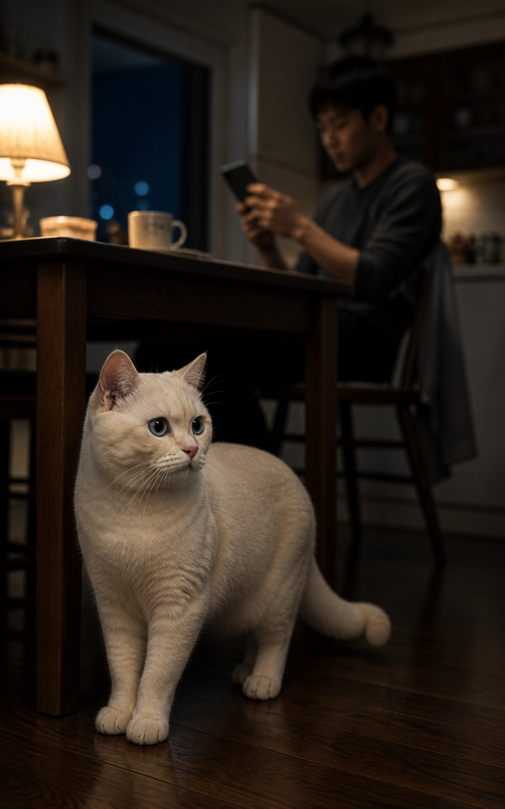
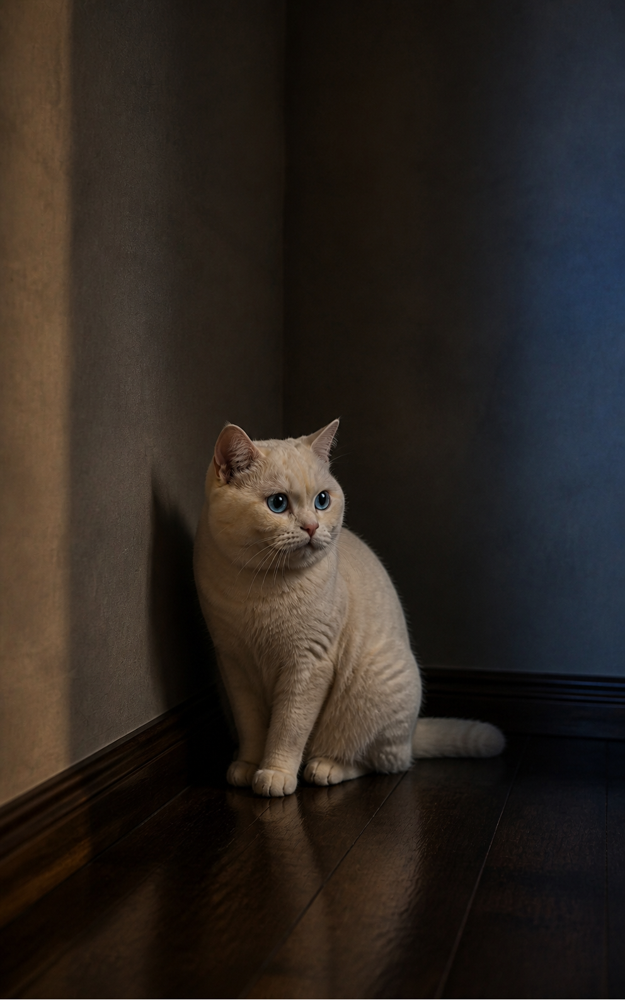

「你記錯了，我從來沒說過。」
今晚，魯魯又在路邊聽見了一句話。聽起來有點刺耳。但只憑這一句，還看不出發生了什麼。
"You remembered it wrong. I never said that."
Tonight, Lulu heard a sentence from the sidelines. It sounded unsettling. But one sentence alone still doesn't tell us what is happening.
「你記錯了，我從來沒說過。」
今晚，魯魯又在路邊聽見了一句話。聽起來有點刺耳。但只憑這一句，還看不出發生了什麼。
"You remembered it wrong. I never said that."
Tonight, Lulu heard a sentence from the sidelines. It sounded unsettling. But one sentence alone still doesn't tell us what is happening.
幾天後，魯魯又聽見了類似的話。
「根本沒有這回事。」「你是不是又記錯了？」「你真的想太多了。」
第一次，也許只是兩個人記得不一樣。可是當類似的否定一次又一次出現，魯魯開始多看了一會兒。
A few days later, Lulu heard something similar again.
"That never happened." / "Are you remembering it wrong again?" / "You're overthinking this."
The first time might simply be two people remembering things differently. But when the same kind of denial keeps returning, Lulu stays a little longer to watch.
真正值得注意的，可能不是某一句話——而是它開始變成一種「模式」。
記憶不同，不等於煤氣燈。爭吵，也不等於煤氣燈。真正值得看的，是同樣的事情是不是一直重複。
What matters may not be one particular sentence — it is whether it begins to form a pattern.
Different memories do not automatically mean gaslighting. Neither does an argument. What matters is whether the same kind of interaction keeps repeating.

一個人反覆被告訴：「你記錯了。」「你太敏感了。」「事情根本不是那樣。」這樣算煤氣燈效應嗎？
Someone keeps hearing "You remembered it wrong," "You're too sensitive," "That's not what happened." Would you call this gaslighting?

後來，改變的不是那幾句話——是那個人開始先懷疑自己。
他開始反覆確認自己的記憶。有些話說出口以前，也要先想很久。不是因為他突然變得健忘，而是他越來越不確定：「我還能相信自己的感覺嗎？」
Later, the biggest change was no longer the words — it was the person beginning to doubt themselves first.
They started checking their own memories again and again. Even speaking became something to think through carefully. Not because they had suddenly become forgetful, but because they were beginning to wonder: "Can I still trust what I feel?"
這時候，才比較接近「煤氣燈效應」真正需要注意的地方。
它不只是兩個人的記憶不同。而是在反覆的否定、扭曲或淡化之後，一個人慢慢失去對自己記憶、感受和判斷的信任。
不是一句話。是長期形成的影響。
This is where the idea of gaslighting becomes more relevant.
It is not simply two people remembering things differently. It is when repeated denial, distortion, or dismissal gradually makes someone lose trust in their own memory, feelings, or judgment.
下次遇到類似的事，不用急著替誰貼標籤。
先看：是不是反覆發生。
再看：對方願不願意一起確認。
最後看：你是不是越來越不相信自己。
一句話不是答案，模式才是線索。
The next time something feels similar, you do not have to label it immediately.
First: Does it keep happening? Then: Is the other person willing to check things together? Finally: Are you starting to trust yourself less and less?
魯魯先陪你看到這裡。
但還有一個問題沒有回答——當一個人已經開始不相信自己，接下來可以怎麼辦？
Lulu will stay here with you for now. But one question is still unanswered: when someone has already begun to doubt themselves, what can they do next?